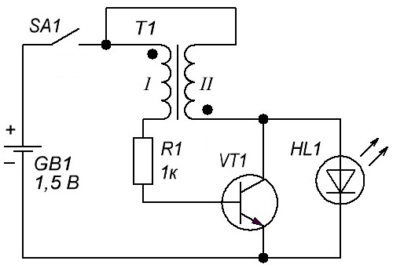
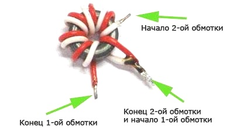
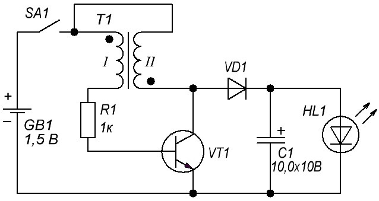
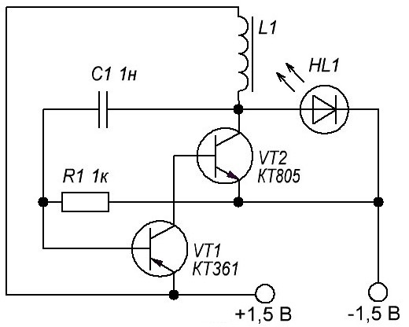
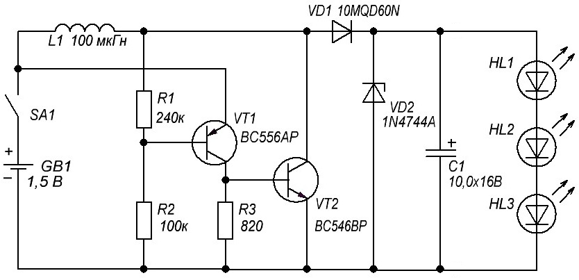
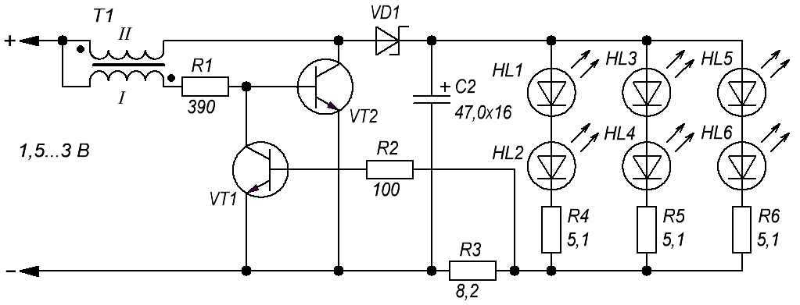
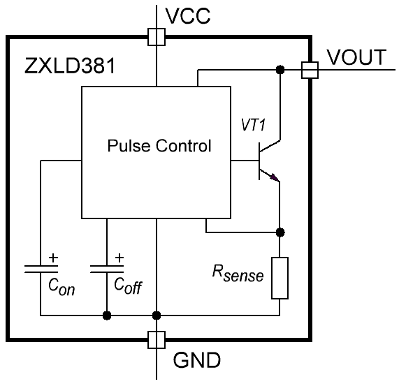
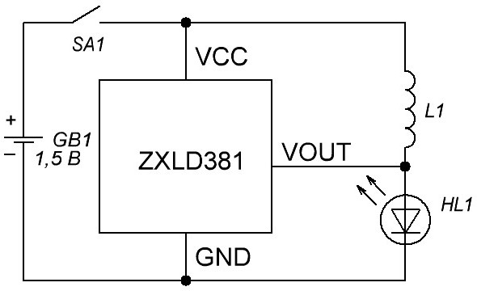
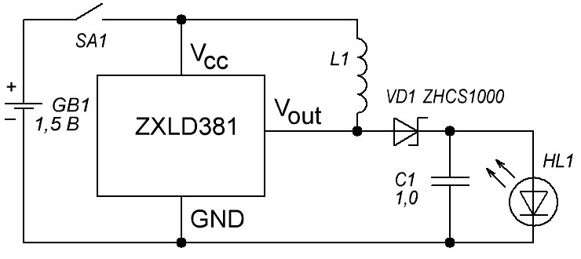
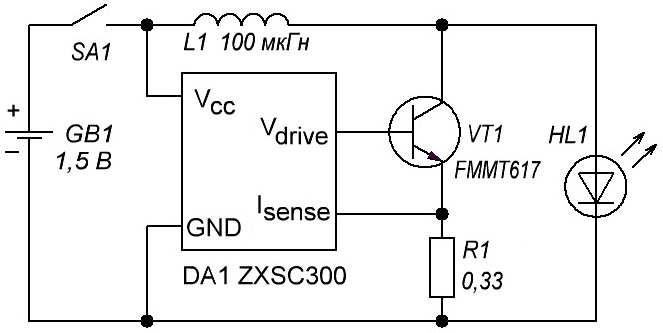

Схемы питания светодиодов
Прямое падение напряжения на светодиоде, как правило, не менее 2,4…3,4 В, поэтому от одной батарейки с напряжением 1,5 В, а тем более аккумулятора с напряжением 1,2 В зажечь светодиод просто невозможно. Тут есть два выхода:
- применять батарею из трех или более гальванических элементов,
- строить простой DC-DC преобразователь.
Именно преобразователь позволит питать фонарик всего от одной батарейки. Такое решение уменьшает расходы на источники питания, а кроме того позволяет полнее использовать заряд гальванического элемента: многие преобразователи работоспособны при глубоком разряде батареи до 0,7 В. Использование преобразователя также позволяет уменьшить габариты фонарика.
Простейшая схема для питания светодиода
Схема представляет собой блокинг-генератор. Это одна из классических схем электроники, поэтому при правильной сборке и исправных деталях начинает работать сразу. Главное в этой схеме правильно намотать трансформатор Tr1, не перепутать фазировку обмоток.

В качестве сердечника для трансформатора можно использовать ферритовое кольцо с платы от негодной энергосберегающей люминесцентной лампы. Обмотки следует мотать в два провода. Начало обмоток на схеме показано точкой. Достаточно намотать несколько витков изолированного провода и соединить обмотки, как показано на рисунке 2. Обмоточные провода типа ПЭВ или ПЭЛ диаметром не более 0,3 мм, что позволит уложить на кольцо чуть большее количество витков, хотя бы 10…15, что несколько улучшит работу схемы.

В качестве транзистора можно использовать любой маломощный транзистор n-p-n проводимости: КТ315, КТ503, BC547.
Можно применить транзистор проводимости p-n-p, например КТ361 или КТ502.В этом случае необходимо поменять полярность включения батарейки.
Резистор R1 подбирается по наилучшему свечению светодиода, хотя схема работает, даже если его заменить просто перемычкой.
Преобразователь с выпрямителем
Для создания простого фонарика к схеме на рис. 1 необходимо добавить диод и конденсатор (рис. 2). Это обеспечит более яркое свечение светодиода.

В этой схеме светодиод питается не пульсирующим, а постоянным током. В этом случае яркость свечения будет несколько выше, а уровень пульсаций излучаемого света будет намного меньше. В качестве диода подойдет любой высокочастотный, например, КД521.
Преобразователи с дросселем
Еще одна простейшая схема показана на рисунке 4. Она несколько сложнее, чем схема на рисунке 1, содержит 2 транзистора, но при этом вместо трансформатора с двумя обмотками имеет только дроссель L1. Такой дроссель можно намотать на кольце все от той же энергосберегающей лампы, для чего понадобится намотать всего 15 витков обмоточного провода диаметром 0,3…0,5мм.

При указанном параметре дросселя на светодиоде можно получить напряжение до 3,8 В (прямое падение напряжения на светодиоде 5730 3,4 В), что достаточно для питания светодиода мощностью 1 Вт. Наладка схемы заключается в подборе емкости конденсатора C1 в диапазоне ±50% по максимальной яркости светодиода. Схема работоспособна при снижении напряжения питания до 0,7 В, что обеспечивает максимальное использование емкости батареи.
Если рассмотренную схему дополнить выпрямителем на диоде VD1, фильтром на конденсаторе C1, и стабилитроном VD2, получится маломощный блок питания (рис. 5), который можно применить для питания схем на ОУ или других электронных узлов. При этом индуктивность дросселя выбирается в пределах 200…350 мкГн, диод VD1 с барьером Шоттки, стабилитрон VD2 выбирается по напряжению питаемой схемы.

При удачном стечении обстоятельств с помощью такого преобразователя можно получить на выходе напряжение 7…12 В. Если предполагается использовать преобразователь для питания только светодиодов, стабилитрон VD2 можно из схемы исключить.
Все рассмотренные схемы являются простейшими источниками напряжения: ограничение тока через светодиод осуществляется примерно так же, как это делается в различных брелках или в зажигалках со светодиодами.
Светодиод через кнопку включения, без всякого ограничительного резистора, питается от 3…4-х маленьких дисковых батареек, внутреннее сопротивление которых ограничивает ток через светодиод на безопасном уровне.
Схемы с обратной связью по току
Настоящие схемы для питания светодиодов содержат обратную связь по току: как только ток через светодиод достигает определенного значения, выходной каскад отключается от источника питания.
В точности также работают и стабилизаторы напряжения, только там обратная связь по напряжению. На рис. 6 показана схема для питания светодиодов с токовой обратной связью.

Основой схемы является блокинг-генератор, собранный на транзисторе VT2. Транзистор VT1 является управляющим в цепи обратной связи. Обратная связь в данной схеме работает следующим образом.
Светодиоды питаются напряжением, которое накапливается на электролитическом конденсаторе. Заряд конденсатора производится через диод импульсным напряжением с коллектора транзистора VT2. Выпрямленное напряжение используется для питания светодиодов.
Ток через светодиоды проходит по следующему пути: плюсовая обкладка конденсатора, светодиоды с ограничительными резисторами, резистор токовой обратной связи (сенсор) R3, минусовая обкладка электролитического конденсатора.
При этом на резисторе обратной связи создается падение напряжения
Uoc=IR3,
где I - ток через светодиоды.
При возрастании напряжения на электролитическом конденсаторе (генаратор, все-таки, работает и заряжает конденсатор), ток через светодиоды увеличивается, а, следовательно, увеличивается и напряжение на резисторе обратной связи R3.
Когда Uoc достигает 0,6 В транзистор VT1 открывается, замыкая переход база-эмиттер транзистора VT2. Транзистор VT2 закрывается, блокинг-генератор останавливается, и перестает заряжать электролитический конденсатор. Под воздействием нагрузки конденсатор разряжается, напряжение на конденсаторе падает.
Уменьшение напряжения на конденсаторе приводит к снижению тока через светодиоды, и, как следствие, уменьшению напряжения обратной связи Uoc. Поэтому транзистор VT1 закрывается и не препятствует работе блокинг-генератора. Генератор запускается, и весь цикл повторяется снова и снова.
Изменяя сопротивление резистора обратной связи можно в широких пределах изменять ток через светодиоды. Подобные схемы называются импульсными стабилизаторами тока.
Интегральные стабилизаторы тока
В настоящее время стабилизаторы тока для светодиодов выпускаются в интегральном исполнении. В качестве примеров можно привести специализированные микросхемы ZXLD381, ZXSC300.

На рисунке 7 показано устройство микросхемы ZXLD381. В ней содержится генератор ШИМ (Pulse Control), датчик тока (Rsense) и выходной транзистор.
Типовая схема включения микросхемы ZXLD381 показана на рисунке 8. Микросхема выпускается в корпусе SOT23. Частота генерации 350 кГц задается внутренними конденсаторами, изменить ее невозможно. КПД устройства 85%, запуск под нагрузкой возможен уже при напряжении питания 0,8 В.

Прямое напряжение светодиода должно быть не более 3,5 В. Ток через светодиод регулируется изменением индуктивности дросселя, как показано в таблице 1. В средней колонке указан пиковый ток, в последней колонке средний ток через светодиод.
Таблица 1
| L1, мкГн | IHL max, мА | IHL ср, мА |
|---|---|---|
| 47 | 35 | 6,5 |
| 22 | 80 | 15 |
| 15 | 120 | 20 |
| 10 | 190 | 30 |
| 6,8 | 260 | 45 |
| 4,7 | 380 | 55 |
| 3,3 | 510 | 67 |
| 2,2 | 640 | 76 |
Для снижения уровня пульсаций и повышения яркости свечения возможно применение выпрямителя с фильтром (рис. 9).

Таблица 2
| L1, мкГн | IHL ср, мА |
|---|---|
| 47 | 6 |
| 22 | 13,5 |
| 15 | 18 |
| 10 | 27 |
| 6,8 | 41 |
| 4,7 | 50 |
| 3,3 | 61 |
| 2,2 | 69 |
Здесь применяется светодиод с прямым напряжением 3,5 В, диод VD1 высокочастотный с барьером Шоттки, конденсатор C1 желательно с низким значением эквивалентного последовательного сопротивления (low ESR). Эти требования необходимы для того, чтобы повысить общий КПД устройства, по возможности меньше греть диод и конденсатор. Выходной ток подбирается при помощи подбора индуктивности дросселя в зависимости от мощности светодиода.
Микросхема ZXSC300
Отличается от ZXLD381 тем, что не имеет внутреннего выходного транзистора и резистора-датчика тока. Такое решение позволяет значительно увеличить выходной ток устройства, а следовательно применить светодиод большей мощности.

В качестве датчика тока используется внешний резистор R1, изменением величины которого можно устанавливать требуемый ток в зависимости от типа светодиода. Расчет этого резистора производится по формулам, приведенным в даташите на микросхему ZXSC300. Выходной ток ограничивается лишь параметрами выходного транзистора.
При первом включении всех описанных схем желательно батарейку подключать через резистор сопротивлением 10 Ом. Это поможет избежать порчи транзистора, если, например, неправильно подключены обмотки трансформатора. Если с этим резистором светодиод засветился, то резистор можно убирать и проводить дальнейшие настройки.